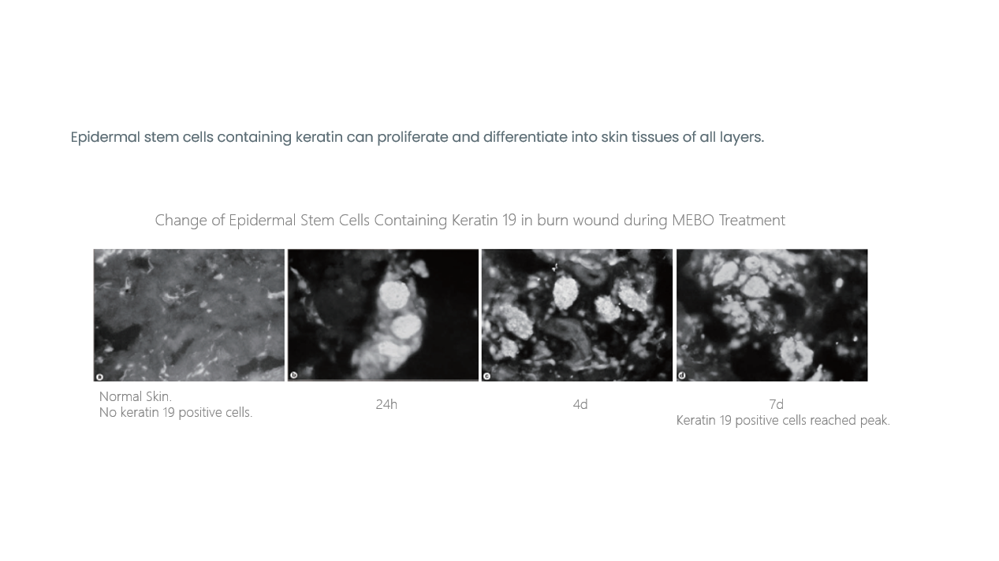
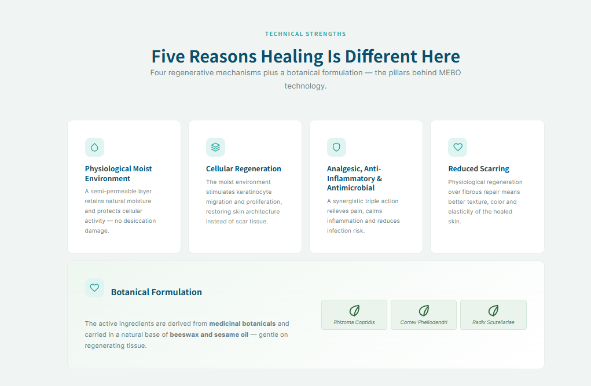

Medicina Regenerativa
La Tecnología Médica Regenerativa (RMT) representa un cambio de paradigma: en lugar de desecar la herida, crea un entorno que imita las condiciones fisiológicas naturales de la piel.
De MEBT a la Tecnología Médica Regenerativa
En la década de 1980, el profesor Rongxiang Xu introdujo la Terapia Húmeda Expuesta para Quemaduras (MEBT), con el Unguüento Húmedo Expuesto para Quemaduras (MEBO) como su agente terapéutico principal, transformando el tratamiento de quemaduras en China. El avance recibió el Premio Estatal de Invención Tecnológica de China en 1988. En las décadas siguientes, MEBT evolucionó hasta convertirse en una plataforma regenerativa completa, hoy reconocida como la Tecnología Médica Regenerativa (RMT).
Lo que empezó como una innovación clínica para quemaduras se ha convertido en un sistema regenerativo reproducible. Los mismos principios restauran hoy el tejido en heridas crónicas, traumáticas y quirúrgicas, y enfermedades dermatológicas: una alternativa real a los cuidados convencionales.
Era MEBT — Desde los 80
Atención de Quemaduras Redefinida
- MEBO introducido por el profesor Rongxiang Xu, revolucionando la atención de quemaduras
- Primer Certificado de Medicamento Nuevo en medicina tradicional china
- Premio Estatal de Invención Tecnológica de China, 1988
Era RMT — Hoy
Una Plataforma Regenerativa Completa
- Cubre quemaduras y heridas crónicas, traumáticas y quirúrgicas, y dermatología
- Aplicaciones en países de LATAM y alcance en más de 70 países
- Más de 35 asociaciones académicas y sociedades en cooperación con RMT
Una evolución: de MEBT a RMT, de las quemaduras a una plataforma regenerativa completa.
HERIDAS AGUDAS VS CRÓNICAS
Los mecanismos detrás de la RMT no son teóricos: abordan desafíos clínicos reales.
Heridas agudas
Causadas por cirugía, trauma o quemaduras, las heridas agudas siguen una secuencia ordenada de reparación y suelen cerrar en 2–4 semanas. El manejo inadecuado de las heridas agudas puede alterar la cascada normal de curación y progresar a heridas crónicas.
Heridas crónicas
Las heridas crónicas se estancan en un estado inflamatorio prolongado y no logran cerrar por más de 4 semanas — a veces meses o años. Las más comunes: pie diabético, úlceras venosas y úlceras por presión.
Dos recorridos muy distintos
De la Curación Pasiva a la Regeneración Activa
En las heridas agudas, la RMT proporciona las condiciones fisiológicas que mantienen la cascada de reparación en curso.


En las heridas crónicas, reactiva el programa detenido estimulando las células madre y restaurando el microambiente de la herida.
Explore el producto
Conozca en detalle MEBO Ungüento: presentación, indicaciones, modo de empleo e información de seguridad.
Ver MEBO Ungüento